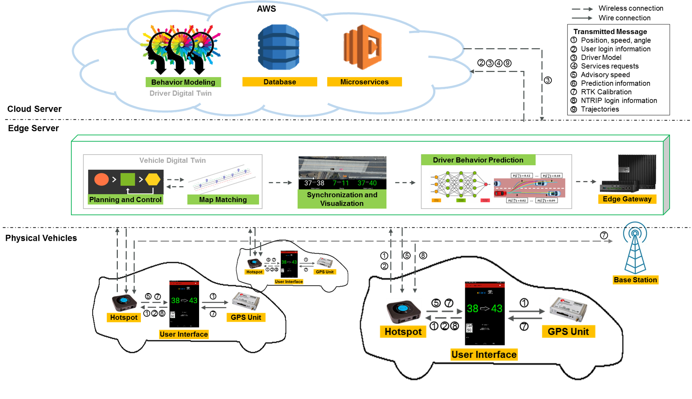
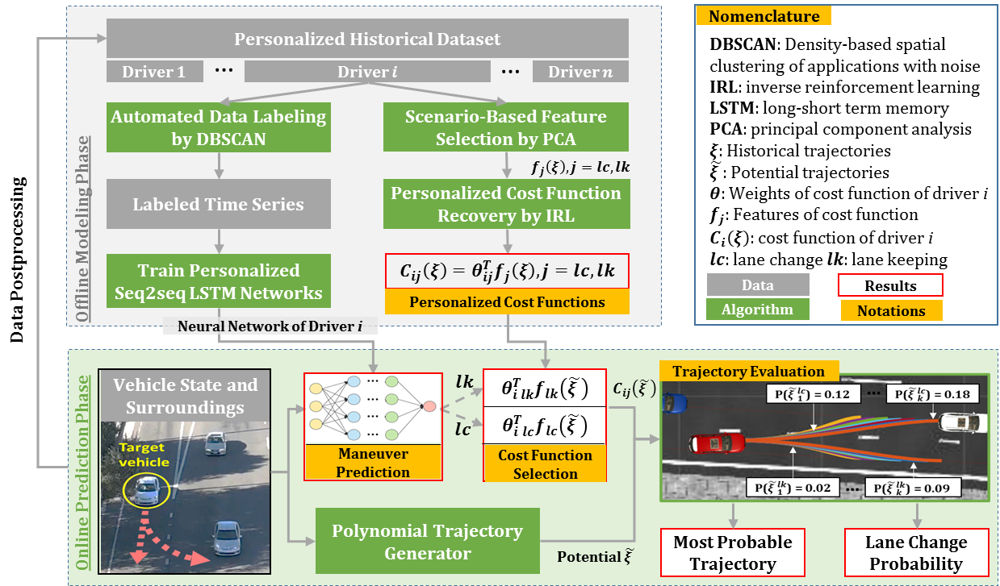

Cyber-Physical Mobility System: Driver Digital Twin
Demo Video: Personalized Lane Change Prediction
The following video demonstrates how our personalized model predicts lane change behavior in both simulation and field tests for different drivers:
Introduction

The Driver Digital Twin predicts personalized lane-change behavior in mixed traffic. A cloud server models individual drivers using historical driving data, while an edge server combines those models with real-time vehicle observations.
The proposed system is first evaluated on a human-in-the-loop co-simulation platform, and then in a field implementation with three passenger vehicles driving along an on/off ramp segment connecting to the edge server and cloud through the 4G/LTE cellular network. The lane change intention can be recognized in 6 seconds on average before the vehicle crosses the lane separation line, and the Mean Euclidean Distance between the predicted trajectory and GPS ground truth is 1.03 meters within a 4-second prediction window. Compared to the general model, using a personalized model can improve prediction accuracy by 27.8%.
Personalized Prediction Workflow
